NOTE 01 / A LITTLE ABOUT ME
Little things I love
I have a soft spot for things that leave room for a little creativity. Go, for instance. Here's a photo of mini Yanyang, already looking very serious about the next move.
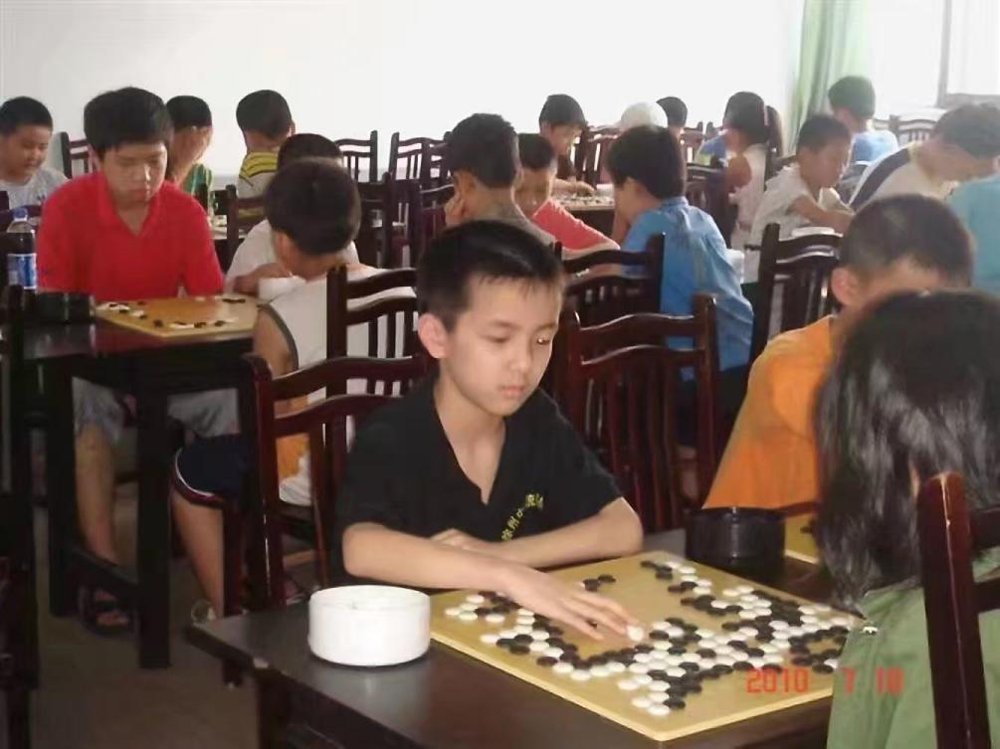
LIFE, AS IT HAPPENS
Hi! I'm so glad you've found your way here. I'd love to share a few of the many things that make my days happy and interesting. The order might be a little all over the place—but then again, so is life. Still adding to this page, one little memory at a time.
I have a soft spot for things that leave room for a little creativity. Go, for instance. Here's a photo of mini Yanyang, already looking very serious about the next move.

I love setting off on solo trips and taking photos along the way. There are far more places and pictures than I could fit on one page, but here are a few favorites. If somewhere catches your eye, feel free to email me—I’d be happy to tell you more.
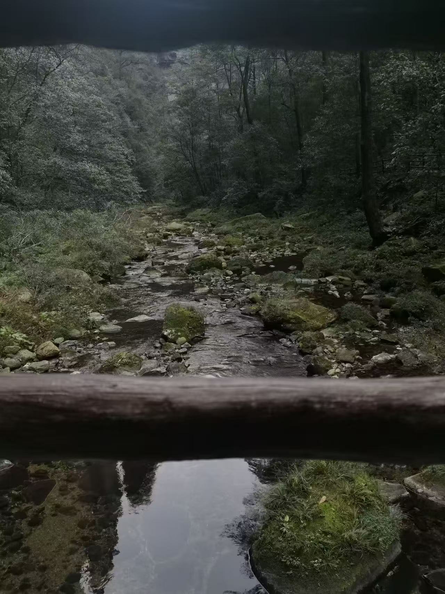
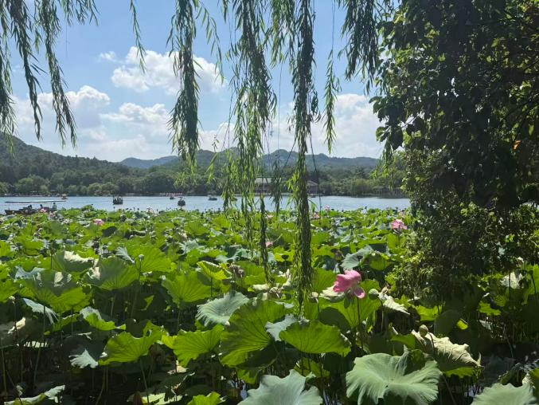
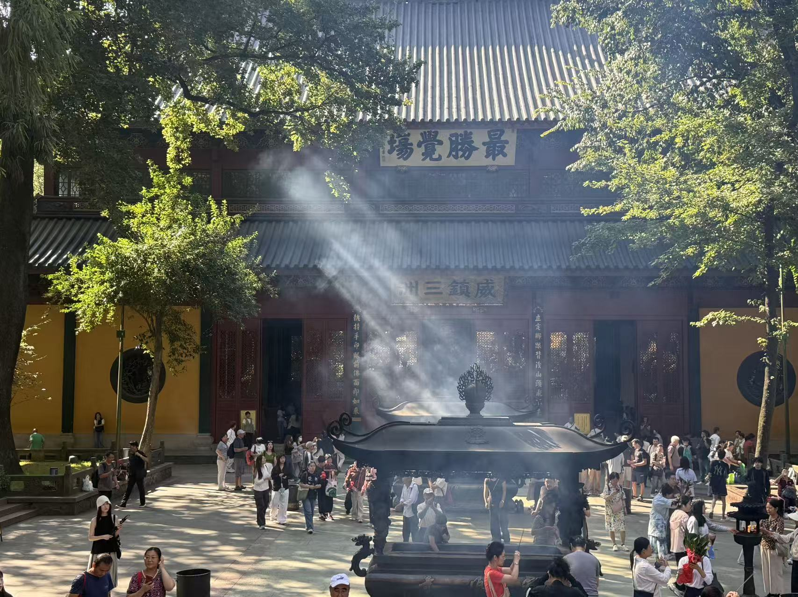
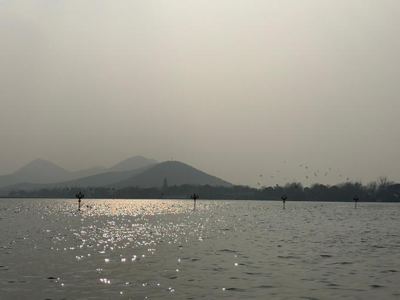
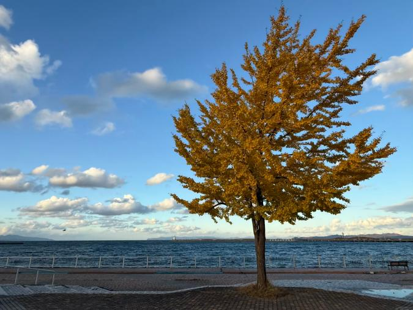
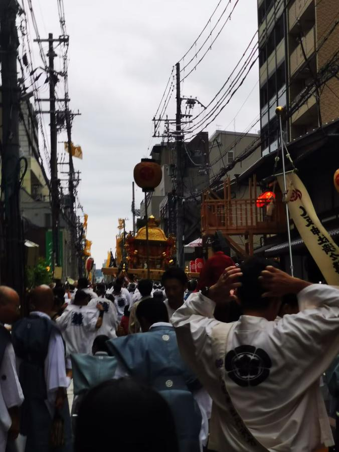
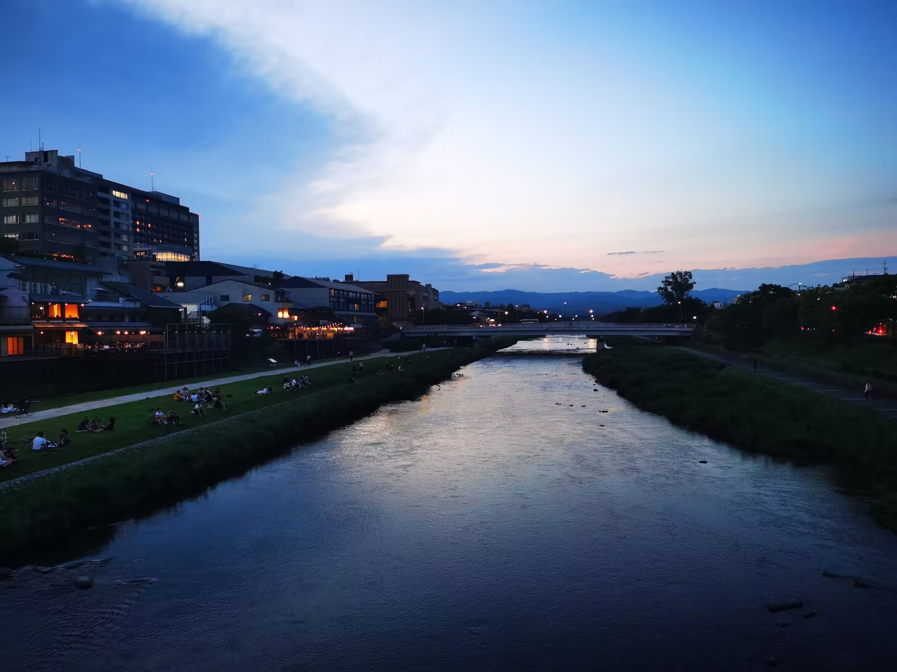
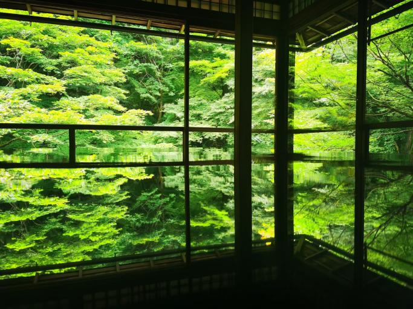
I also enjoy Chinese calligraphy. The piece below was once a gift for someone I liked—a little personal history preserved in ink.
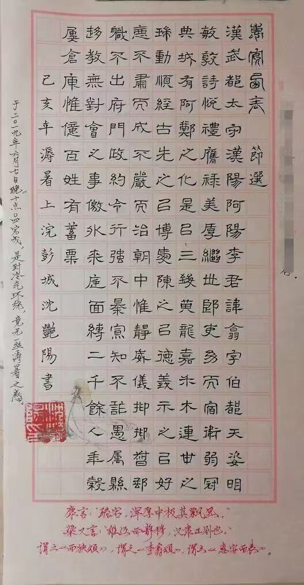
Before university, I followed the humanities track in China’s old gaokao system, so novels and art-house films have always felt like familiar company. Among my favorites are Dream of the Red Chamber, Family, fiction by Ryūnosuke Akutagawa and Kyōka Izumi, and García Márquez’s Love in the Time of Cholera. On screen: The Dreamers, Farewell My Concubine, Jules and Jim, Bande à part, and Seven Samurai.
My parents spent years reminding me to exercise. It took a while, but I finally listened. For about a year now, I’ve swum more than 10 kilometers almost every month, and I’m always up for trying something new.
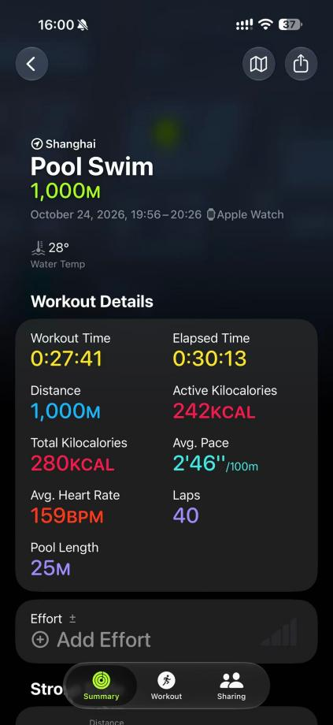
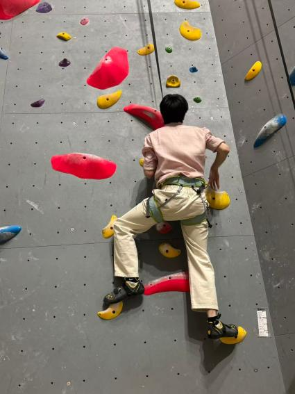
Graduate school has taken me to quite a few academic conferences. I genuinely enjoy hearing researchers and students from different corners of education share what they’re working on—and getting to know the people behind the papers.
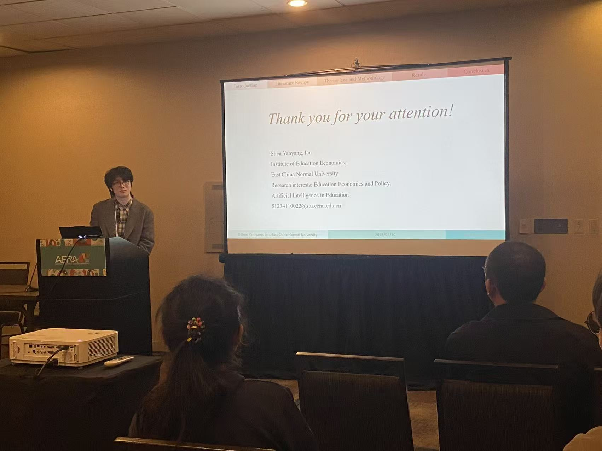
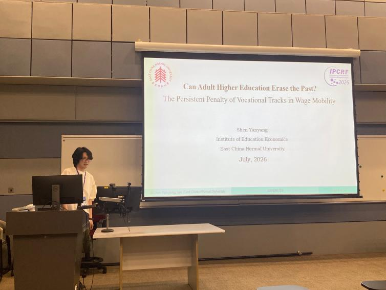
I did a lot of things outside the classroom during my undergraduate years at Hohai University—and I’m grateful for the people I met along the way.
One memory I treasure is receiving Hohai’s “Charming Graduate” recognition, a distinction separate from the Outstanding Graduate award and, as I understand it, meant to recognize contributions to others.
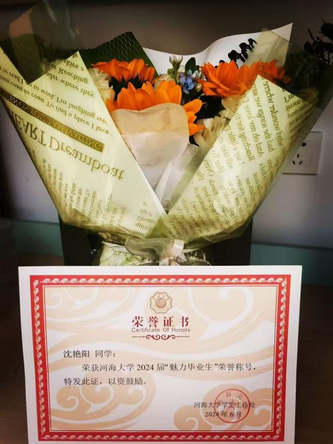
Much of my college life revolved around student activities. I found a wonderful group of friends in the School of Economics and Finance’s External Relations Department, where I served first as department head and later as president of the school’s student union. We looked out for one another while working to bring more opportunities and resources to fellow students.
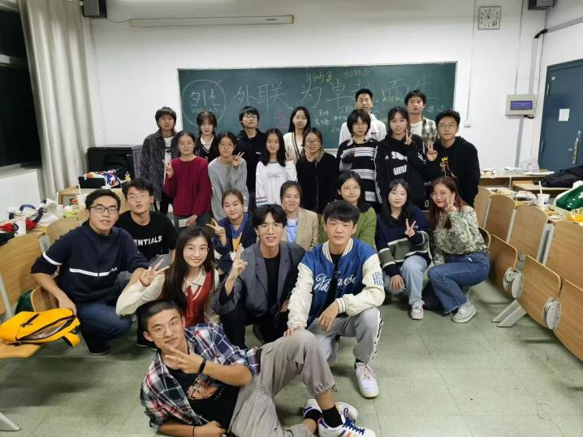
I’ve saved what matters most to me for the end. Ever since primary school, I imagined becoming a teacher. My math teacher, Li Lin, first planted that idea; my high school homeroom teacher, Bin Ling—one of the finest teachers I’ve ever known—made that hope even stronger.
I didn’t get to study education as an undergraduate (though I finally did for my master’s!). While at Hohai, I took part in and helped organize two short-term volunteer teaching programs in rural communities. I taught calligraphy, while our teams offered summer activities in art, music, dance, and more, taking care during the COVID years to keep everyone safe.
Those days stayed with me. I believe children deserve opportunities to experience a world that is richer, wider, and more colorful than the one immediately around them.
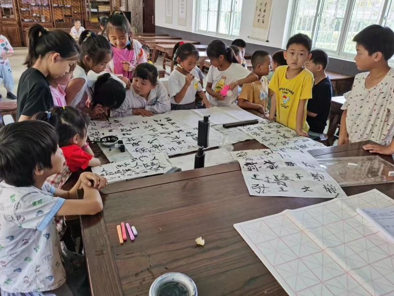
To be continued, whenever life gives me another good story to tell.